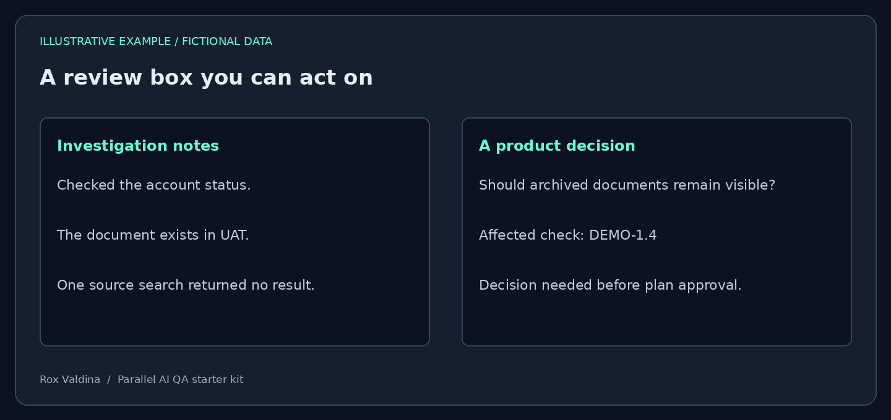
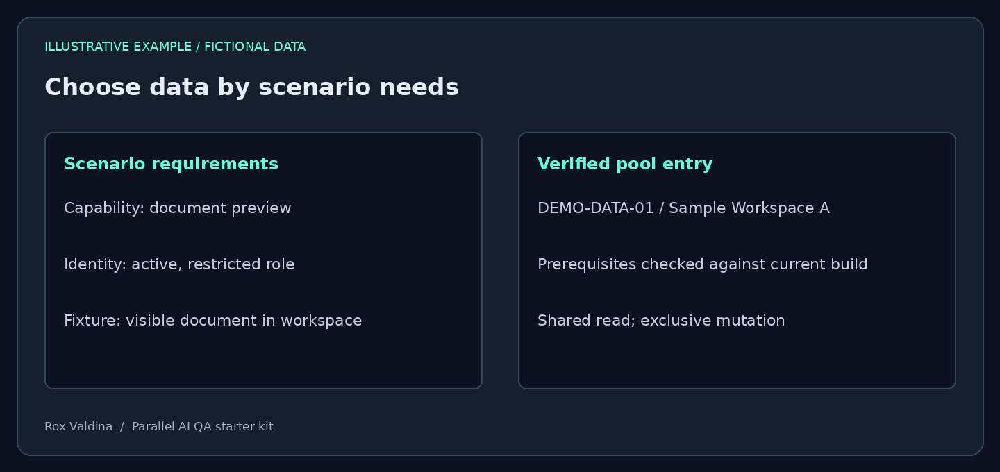
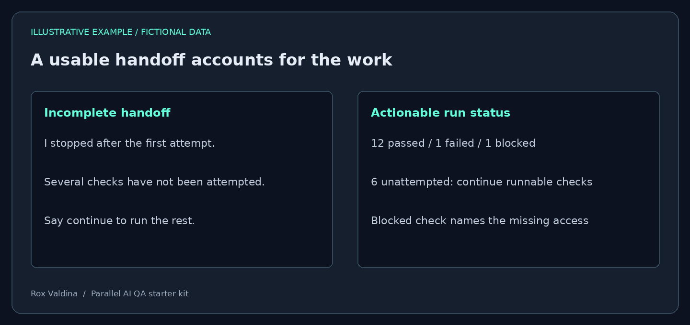
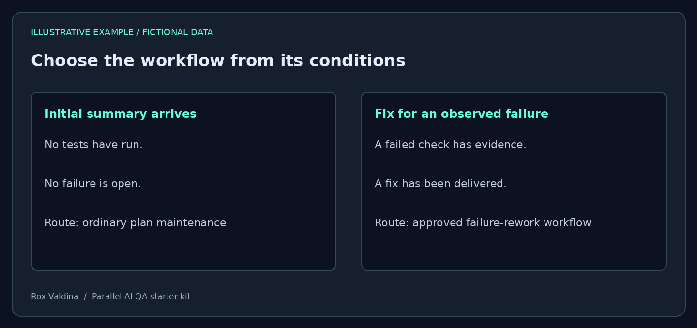

AI-assisted QA / Parallel testing / Workflow design
Scaling AI-Assisted QA Without Scaling the Interruptions
A follow-up to Beyond Test Execution.
My first round of AI-assisted QA work focused on creating test plans faster and helping execute them. I built a workflow around reusable Claude skills for planning, testing, and finalizing results. It gave me a way to run several cards at once.
The next challenge surfaced when I tried to scale that workflow across a release.
A release could contain more than 30 cards, with roughly 20 requiring web testing. A main chat coordinated the release, each card had its own chat, and each testing chat used three subagents.
Many tests could move at once. Many chats could also need my attention at once.
At a glance
Four runs of roughly ten cards each
exposed recurring supervision problems.
Two cards examined in depth
helped trace where execution stopped and why I had to intervene.
About half of the card chats
completed testing without becoming blocked or needing my interaction in the later release run.
Cleaner review boxes and stronger verification
were the clearest improvements I observed.
These are approximate observations from my workflow. Several changes operated together, so I cannot assign the improvements to one rule or claim a controlled productivity benchmark.
The work I hadn't automated
I would review a group of plans and start testing. Almost immediately, chats began asking for sign-ins, clarification, approval, or help with test data.
Some questions required my judgment. Others could be answered using the code, database, application, or information already available to Claude.
A failed attempt could become a blocker before the agent tried another route. A lengthy step could become a reason to pause. A chat could finish its response while much of the approved plan remained unattempted.
I was moving between chats to establish what had happened, what remained unfinished, and whether the agent actually needed me.
I first saw these problems across four runs of roughly ten cards each. I then examined two cards in depth to trace where the agents stopped and what intervention was needed.
The effort went beyond answering questions. I sometimes had to recognize that a reported blocker was recoverable, suggest an experiment, or challenge a failure classification. I even brought a testing transcript to another AI to help interpret the stall and write a recovery prompt.
That supervision was part of the cost of the workflow.
Make verification happen before review
The review box at the top of each plan became an early source of noise.
I used it to find questions that needed my judgment. An instruction requiring Claude to document what it had tried and how each uncertainty could be verified filled that box with investigation notes, setup instructions, and informational warnings.
I had to read each entry to determine whether it was asking me anything.
We restricted the box to actual questions. Verification evidence moved into a separate log, while setup requirements and coverage limitations stayed beside the affected tests. The existing failure-review process continued to handle observed failures.
We also strengthened the investigation before review. Claude was expected to check relevant sources and try another route when its first attempt failed. The verifier was asked to answer each proposed review question before passing it to me.
One transcript showed substantial research followed by an unnecessary question. The missing answer became available only after I pushed the agent to check another source.
Tool-call volume showed activity. I needed evidence that the agent had resolved the prerequisites for the test.
Adapt this to your workflow — A review box with actual questionsExample · Adaptable prompt · Verification exercise


Read the fictional example as text
Investigation notes
- Checked the account status.
- The document exists in UAT.
- One source search returned no result.
A product decision
- Should archived documents remain visible?
- Affected check: DEMO-1.4
- Decision needed before plan approval.
What to customize
- [sources] — name the card, code, read-only database or approved documentation the agent can access.
- [approval policy] — state which plan changes need review.
Review this plan using [sources]. Keep the plan's existing description and coverage sections. The Review Before Testing box contains only specific questions that require my judgment before approval. Lead with the question and affected check ID. Investigate each question using relevant available sources before escalating it. If one lookup fails, try another permitted route. Put verification attempts and source references in the verification log; put setup steps and pending deployment checks beside the affected test. If you find a conflict between acceptance criteria and implementation, show the conflict rather than changing the expected result to match the code. Use [approval policy] for plan changes. If no decision is needed, write 'No decisions needed before testing.' Follow the existing failure-review process for observed failures.
Check whether it worked
Seed one question answerable from an available source and one real product decision. Confirm only the product decision reaches the review box.
Download the review box prompt (.txt)Protect parallel runs from each other
Agents often discovered the same useful accounts, roles, and records. A permission change in one chat could invalidate another chat's expected results.
We introduced a shared data pool organized by the capabilities a scenario required. Claims coordinated access to resources that tests might change, and runtime checks verified that selected records were still usable.
The same interference appeared in browser management. An authentication cleanup command closed every browser session on the machine, interrupting unrelated testing. We changed cleanup to target only the session that chat owned.
Parallel execution required boundaries around application data, permissions, and the tools running the tests.
Adapt this to your workflow — Build a scenario-based data poolExample · Adaptable prompt · Verification exercise


Read the fictional example as text
Scenario requirements
- Capability: document preview
- Identity: active, restricted role
- Fixture: visible document in workspace
Verified pool entry
- DEMO-DATA-01 / Sample Workspace A
- Prerequisites checked against current build
- Shared read; exclusive mutation
What to customize
- [environments] — list allowed UAT environments.
- [capabilities] — describe feature needs such as document preview or restricted-user access.
- [protected resources] and [allowed mutations] — define actual limits before creating data.
Design a reusable test-data pool for [environments] covering [capabilities]. Use the supplied JSON/CSV template. Inspect available read-only sources to identify candidates and verify scenario prerequisites, including active status, workspace, effective role, relationships and required records. Keep [protected resources] excluded and work within [allowed mutations]. Mark unverified entries as candidates. Record a verification method, timestamp, build or refresh reference, resource dependencies, and cleanup for each entry. Distinguish read-only shared use from changes requiring exclusive access. Claim the actual scope of a change, including shared roles or workspace settings. Explain how concurrent allocation will be atomic, how active claims are renewed, and how failed cleanup is quarantined. Demonstrate two concurrent selections on disposable data before release use. Ask only for authorization or a decision that available evidence cannot resolve.
Check whether it worked
Have two sessions request the same mutable sample record. Only one may acquire it. Then change a shared sample role and confirm readers of that role are recognized as conflicting.
Download the data pool prompt (.txt)Coordinate authentication at kickoff
Plans were often created while developers were moving work into the test environment. By execution time, saved access could need refreshing.
A shared sign-in file already existed, but each card chat handled uncertainty about access independently. We checked whether separate browser sessions could reuse that state and whether impersonation stayed within its own session. We also expanded validation to cover the application surfaces the tests actually used.
Having the main chat start testing and coordinate authentication was a significant improvement in the release run. It reduced the repeated startup work of visiting each card chat.
That made it possible to separate plan approval from testing kickoff. I could review plans in a focused block, then deliberately start the ready work.

Find out which rules the agents received
As problems appeared, we added local instructions. Eventually, I asked for an inventory of those rules, their locations, and the evidence that chats had loaded them.
The inventory listed 56 rules. At that point, 29 were classified as written only.
Some instructions depended on a chat choosing to open another file. Lessons from earlier sessions lived in folders that current chats never loaded. Existing chats could retain an older instruction after its source file changed.
We consolidated the rules into a versioned rulebook, added automatic imports and refresh mechanisms, and tested delivery to fresh chats, running chats, and subagents.
That established whether the instructions reached the agents. We still had to test whether agents applied them correctly.
Adapt this to your workflow — Audit what your agents actually receiveExample · Adaptable prompt · Verification exercise
This resource audits instruction delivery. Use a harmless version marker and record what each session actually receives.
What to customize
- [instruction locations] — include global, project, skill, memory and agent-brief sources.
- [session types] — list parent, child and subagent types used in practice.
Audit rule delivery for [instruction locations] across [session types]. Inventory the effective instructions, conflicts, load mechanism and update behavior. Assign a version marker to the authoritative project rules. Verify what a fresh session, an existing session and a subagent actually receive using supported loading mechanisms. For an update, demonstrate that each receives the new version before relevant work resumes. Keep delivery receipts in the run log. Distinguish Written, Loaded and Demonstrated behavior. Preserve higher-priority platform and organization policies. Identify unsupported refresh behavior instead of claiming every session automatically updates.
Check whether it worked
Publish a harmless new marker. Inspect a fresh parent, a child and a resumed session. Record which version each received, then test one rule in behavior.
Download the rule delivery prompt (.txt)Recovering without bringing me back into the loop
One testing chat struggled with a cramped browser form. It stopped and proposed that I perform the operation or obtain additional access.
I supplied a larger viewport size. The form became usable, and testing progressed through several checks.
Another chat reported failures that needed investigation of the expected behavior and test data. My questions prompted it to inspect the historical implementation and run a controlled experiment.
We made recovery expectations more concrete. Before escalating, agents were expected to examine the environment, available routes, data prerequisites, expected results, and evidence. Where authorized, they could test their explanation through a controlled UAT change.
We also added accounting against approved check IDs. A handoff had to distinguish completed checks from blocked, waiting, and unattempted work.
Counting results alone couldn't establish their accuracy. A run could account for every check and still classify a plan or data problem as a product failure.
Adapt this to your workflow — Recover and account for unfinished workExample · Adaptable prompt · Verification exercise


Read the fictional example as text
Incomplete handoff
- I stopped after the first attempt.
- Several checks have not been attempted.
- Say continue to run the rest.
Actionable run status
- 12 passed / 1 failed / 1 blocked
- 6 unattempted: continue runnable checks
- Blocked check names the missing access
What to customize
- [approved plan] — identify its current version and check IDs.
- [authorized recovery actions] — name permitted changes and resource limits.
Execute [approved plan] through to completion within [authorized recovery actions]. Before declaring a blocker or product failure, inspect the relevant environment, available route, data prerequisites, expected-result source and evidence. Use the relevant checks for this problem; avoid unrelated investigations. If a UI is clipped, verify viewport dimensions and try an appropriate custom size before escalating. If a send or mutation may have succeeded, inspect its outcome before retrying to avoid duplicates. Run slow or repetitive approved work. Continue independent checks while another waits. When permitted, use a reversible controlled experiment to test your explanation and verify restoration. Ask me for a specific required action only when it genuinely blocks the remaining work. Reconcile every approved check ID against evidence-backed results before handing back. Distinguish Pass, Product fail, Blocked, Waiting and Unattempted. Finish runnable unattempted checks. Keep product expectations intact; propose necessary plan corrections under the existing approval policy.
Check whether it worked
Use a harmless clipped form and one stale sample record. Confirm recovery, no duplicate mutation, and a final accounting that exposes a deliberately unattempted check.
Download the recovery prompt (.txt)When fixes created more work
Over several days, I spent substantial time refining the configuration.
Broad rules sometimes applied to situations they hadn't been intended to cover. A request to incorporate a late summary was routed through a failure-rework workflow, producing unnecessary commands and files.
Rules needed clearer triggers and boundaries. A developer delivering a fix for an observed failure calls for rework. A summary arriving before testing calls for a plan update. Those conditions needed to be explicit.
The alert experiment also introduced friction. Colored title prefixes worked in pilot chats, but real chat titles triggered approval prompts. Moving chats into status groups conflicted with the nested structure used for release coordination. Chat names also supported my time-tracking workflow.
I rolled the alert configuration back.
The pilot had demonstrated a feature under conditions that differed from the real workflow. Preserving the actual chat structure, naming, and permissions needed to be part of the test.
Adapt this to your workflow — Give rules clear boundariesExample · Adaptable prompt · Verification exercise


Read the fictional example as text
Initial summary arrives
- No tests have run.
- No failure is open.
- Route: ordinary plan maintenance
Fix for an observed failure
- A failed check has evidence.
- A fix has been delivered.
- Route: approved failure-rework workflow
What to customize
- [workflow rules] — paste the specific existing rules to audit.
- [task states] — define planning, testing started, failure open and fix delivered.
Audit [workflow rules] against [task states]. For each rule, specify observable applies-when conditions, required action, scope, end condition and the ordinary route otherwise. Identify contradictions and overbroad wording. Preserve the current approval and tool-permission boundaries. Test one task that should activate each rule and one nearby task that should not. For example, an initial summary arriving before tests start should update the plan under its normal approval policy; a delivered fix for an observed failure should enter failure rework. Record which route was selected and why in the execution log. Propose the smallest coherent revision and verify the routing in a fresh session before applying it release-wide.
Check whether it worked
Try a late first summary with no tests run, then a delivered fix with an open failure. Confirm only the second selects failure rework.
Download the rule scope prompt (.txt)What improved in the release run
Review boxes became substantially cleaner. During the release run, they contained actual questions.
I estimated that about half the card chats executed their testing through to the end without becoming blocked or needing interaction from me. I saw more independent code checking.
I observed no chat using bad, disabled, or deleted test data, and no instance of one chat disrupting another through its test data or changes.
Some chats still blocked themselves unnecessarily. Understanding what needed my attention across the sidebar remained difficult.
These are observations from one release, with several changes operating together. They support the workflow's improvement as a whole. The contribution of each individual change remains uncertain.
What I would check earlier next time
Verify instruction delivery. Check what the main chat, card chats, and subagents actually receive. Test updates in both fresh and existing sessions.
Define when a rule applies. Give it observable conditions and a clear scope. Test one situation where it should apply and a similar situation where it should stay inactive.
Verify data against the scenario. Confirming that a record exists is only the first step. It also needs the relationships, permissions, status, and supporting material the test requires.
Separate evidence from decisions. Keep investigation records available without making every finding something the reviewer must process.
Test isolation and cleanup. Check whether one run can change another's data, permissions, authentication, or browser session.
Prove representative execution paths early. If many checks depend on the same complicated interaction, establish that it works before committing the run to repeating it.
Measure intervention. Count the times a person has to investigate, recover, or restart work. Record necessary approvals separately.
Pilot the real workflow. Include the actual nesting, titles, permissions, and tracking tools. Validate the user-visible result, including whether a notification actually appeared.
A starter kit for your own workflow
The companion download turns these lessons into editable templates for your own application.
- QA operating rules covering verification, recovery, authorized actions, cleanup, escalation, and completion.
- A test-data pool in JSON and CSV, with capability selection, prerequisites, verification, sharing restrictions, and cleanup.
- A shared authentication recipe for validating approved identities and reusing protected session state in independent browser sessions.
- A parallel-run checklist for resource ownership and interference.
- Verification exercises and an intervention log to measure whether your own configuration helps.
Start with one representative scenario and two concurrent sessions. Fill in your application's boundaries, verify the setup, and expand from the behavior you observe. Each expandable example in this article includes a prompt you can give your AI and a way to check its result.
13,821 bytes
Editable templates and prompts—not an executable authentication service or resource-lock manager. Start small, replace the placeholders, and verify behavior in your own environment.
Download individual templates and prompts
- README.md1,492 bytes
- authentication-recipe.md2,841 bytes
- data-pool-guide.md2,415 bytes
- data-pool.csv598 bytes
- data-pool.json1,463 bytes
- intervention-log.csv127 bytes
- operating-rules.md4,776 bytes
- parallel-run-checklist.md1,295 bytes
- prompts/data-pool.txt961 bytes
- prompts/recovery.txt1,086 bytes
- prompts/review-box.txt846 bytes
- prompts/rule-delivery.txt676 bytes
- prompts/rule-scope.txt730 bytes
- prompts/shared-auth.txt904 bytes
- rule-scope-template.md1,280 bytes
- verification-exercises.md1,597 bytes
About half the chats completed independently in this run. The review experience improved, and several recurring data problems disappeared from what I observed. Those gains came through repeated testing of the agents' own workflow.
The standard I'm carrying forward is straightforward: how much trustworthy work can finish while my attention is elsewhere?
All examples on this page use fictional data and generalized workflows. They illustrate the approach without exposing employer source code, customer records, internal infrastructure, or proprietary test material.